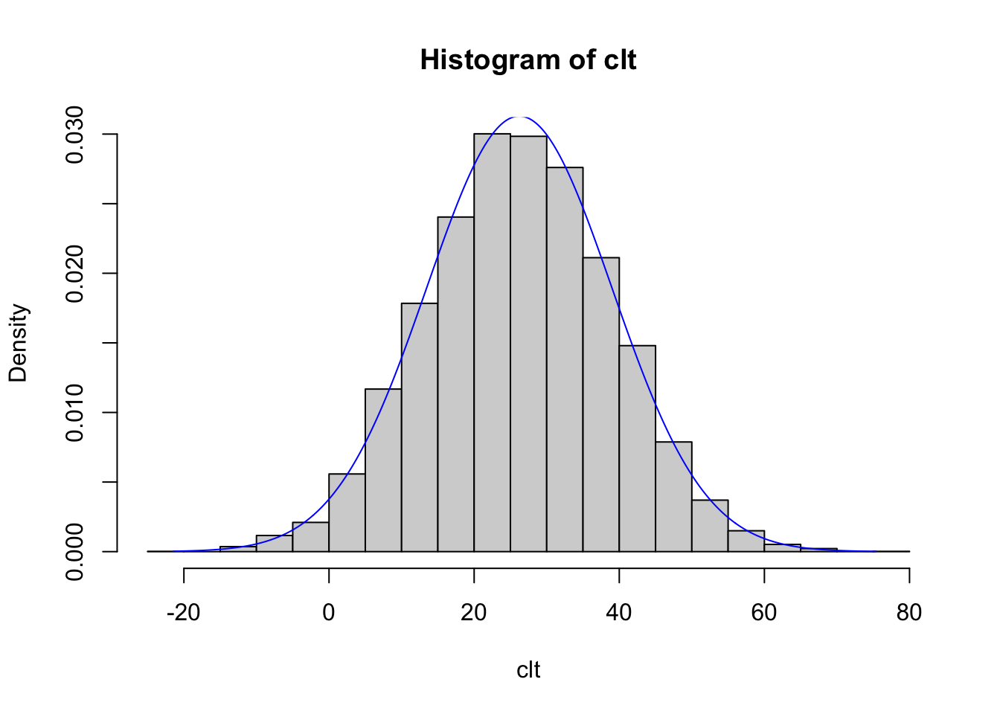

Chapter 11 Class Composition
The goal of the following code is to assign a screen diagnosis based on the pituitary adenoma screen when it includes SF-1, Pit-1, and ACTH (screenDxACTH) and also the screen diagnosis when it is based upon SF-1, Pit-1, and Tpit (screenDxTpit).
Pitable1 <- patma %>%
filter(!is.na(TPITMedian)) %>%
transmute(CaseID = CaseID,
finDx = finDx,
manDx = manDx,
screenDxACTH = case_when(
SF1Median > 4 & Pit1Median <= 4 & ACTHMedian <=4 ~ "GON",
SF1Median <= 4 & Pit1Median > 4 & ACTHMedian <=4 ~ "Pit1",
SF1Median <= 4 & Pit1Median <= 4 & ACTHMedian > 4 ~ "ACTH",
SF1Median <= 4 & Pit1Median <= 4 & ACTHMedian <=4 ~ "NULL",
TRUE ~ "Other"
),
screenDxTpit = case_when(
SF1Median > 4 & Pit1Median <= 4 & TPITMedian <=4 ~ "GON",
SF1Median <= 4 & Pit1Median > 4 & TPITMedian <=4 ~ "Pit1",
SF1Median <= 4 & Pit1Median <= 4 & TPITMedian > 4 ~ "ACTH",
SF1Median <= 4 & Pit1Median <= 4 & TPITMedian <=4 ~ "NULL",
TRUE ~ "Other"
)) 11.1 Plot the managerial categories. As a proportion:
Pitable1 %>%
count(manDx=fct_lump(manDx, 7), sort = TRUE) %>%
mutate(manDx=fct_reorder(manDx,n),
proportion=n/sum(n)) %>%
ggplot(aes(manDx, proportion)) +
geom_col() +
coord_flip() +
scale_y_continuous(labels = scales::percent_format(accuracy = 1)) +
labs(x = "Managerial Categories",
y = "Proportion of Cases")
# Now without proportion:
p1 <- Pitable1 %>%
count(manDx=fct_lump(manDx, 7), sort = TRUE) %>%
mutate(manDx=str_replace(manDx, "GON", "Gonadotroph"),
manDx=str_replace(manDx, "ACTH", "Corticotroph"),
manDx=str_replace(manDx, "GH", "Somatotroph"),
manDx=str_replace(manDx, "PRL", "Lactotroph"),
manDx=str_replace(manDx, "NULL", "Null Cell"),
manDx=str_replace(manDx, "PIT1", "Pit-1 Family NOS"),
manDx=str_replace(manDx, "UNK", "Unknown"),
manDx=str_replace(manDx, "PLUR", "Plurihormonal NOS")) %>%
mutate(manDx=fct_reorder(manDx,n)) %>%
ggplot(aes(manDx, n)) +
geom_col() +
coord_flip() +
labs(x = "Managerial Categories",
y = "Number of Cases")+
theme(axis.text.x = element_text(color = "black", size = 12)) +
theme(axis.title.x = element_text(color = "black", size = 12)) +
theme(axis.text.y = element_text(color = "black", size = 12)) +
theme(axis.title.y = element_text(color = "black", size = 15))
p1A slightly different strategy is useful if I want to display small values (everything not GON), keep the columns ordered by manDx, and use finDx to provide fill. Failing to fct_reorder() the manDx in the x coordinate, I used fct_relevel() on the fly to compel the correct order.
p2 <- Pitable1 %>%
filter(!(manDx == "GON")) %>%
count(manDx, finDx, sort = TRUE) %>%
mutate(manDx=str_replace(manDx, "GON", "Gonadotroph"),
manDx=str_replace(manDx, "ACTH", "Corticotroph"),
manDx=str_replace(manDx, "GH", "Somatotroph"),
manDx=str_replace(manDx, "PRL", "Lactotroph"),
manDx=str_replace(manDx, "NULL", "Null Cell"),
manDx=str_replace(manDx, "PIT1", "Pit-1 Family NOS"),
manDx=str_replace(manDx, "UNK", "Unknown"),
manDx=str_replace(manDx, "PLUR", "Plurihormonal NOS")) %>%
ggplot(aes(x = manDx %>% fct_relevel("Plurihormonal NOS", "Unknown", "Pit-1 Family NOS", "Null Cell", "Lactotroph", "Somatotroph", "Corticotroph"), y = n, fill = finDx)) +
geom_col() +
coord_flip() +
labs(x = "Non-gonadotroph Managerial Categories",
y = "Number of Cases") +
scale_fill_discrete(name = "Final Diagnoses") +
theme(axis.text.x = element_text(color = "black", size = 12)) +
theme(axis.title.x = element_text(color = "black", size = 12)) +
theme(axis.text.y = element_text(color = "black", size = 12)) +
theme(axis.title.y = element_text(color = "black", size = 15))
p2
Note that particularly difficult cases are easier to see: for instance, the only “GH” in this material might be termed GH(SG) or PIT1(s)–from ClinNotes: “Patient was pregnant at the time of presentation. Growth hormone elevated, but pregnancy can cause this. No endocrinopathy clinically. Villa et al. Silent PIT1+.” Check out her consolidated clinical and pathological notes as follows:
## [1] "Patient was pregnant at the time of presentation. Growth hormone elevated, but pregnancy can cause this. No endocrinopathy clinically. \v\vGH Villa et al. Silent PIT1+"Also note that the colorful graph above is still hard to read. A table would work too. This winds up being pretty ugly as a table, even if I took the time to clean it up and sort by manDx and then finDx, which would pull like manDx together and show of the numbers in a more sensible way.
Pitable1 %>%
filter(!(manDx %in% c("GON","NULL"))) %>%
count(manDx=fct_lump(manDx, 5), finDx, sort = TRUE) %>%
arrange(manDx, finDx) %>%
knitr::kable(align = "c")| manDx | finDx | n |
|---|---|---|
| ACTH | ACTH(DG) | 5 |
| ACTH | ACTH(s) | 18 |
| GH | GH | 1 |
| GH | GH(SG) | 3 |
| GH | GH+(DG) | 1 |
| GH | GH+(SG) | 5 |
| GH | PlurGH | 6 |
| PIT1 | GH/PRL | 1 |
| PIT1 | PIT1(s) | 1 |
| PIT1 | TSH(s) | 1 |
| PIT1 | TSH+ | 1 |
| PLUR | PLUR | 1 |
| PRL | PRL | 13 |
| PRL | PRL+ | 2 |
| UNK | UNK | 1 |
Hadley Wickham has commented on the problem of “breaks” in axes, which are difficult to interpret or even deceiving. He supports a 2 plot solution: one for all the data, and one for just the small values. See this illustrated by another author here https://stackoverflow.com/questions/7194688/using-ggplot2-can-i-insert-a-break-in-the-axis. To put both plots in the same figure, the gridExtra and grid packages are helpful.
After experimenting with simple versions generated by grid.arrange(p1,p2, nrow=1) I used the following to generate horizontal plots p1 and p2.
lay = rbind(c(1,2))
grid.arrange(arrangeGrob(p1, left = textGrob("A)", x = unit(2, "npc"),
y = unit(0.05, "npc"))),
arrangeGrob(p2, left =textGrob("B)", x = unit(2, "npc"),
y = unit(0.05, "npc"))),
layout_matrix = lay)
Now it’s time to generate a TIFF. Note how I change the orientation of the figure from horizontal (above) by switching from rbind() to cbind(). This produces a better figure.
Hint: I wasted a lot of time messing with this figure, mostly because I didn’t start by modifying the width or height of the output in the tiff() function. DO THIS FIRST!
lay = cbind(c(1,2))
tiff(filename = "Figure2ARPA.tiff", width = 6, height = 10, units = "in", res = 600)
print(grid.arrange(arrangeGrob(p1, left = textGrob("A)", x = unit(2, "npc"),
y = unit(0.05, "npc"))),
arrangeGrob(p2, left =textGrob("B)", x = unit(2, "npc"),
y = unit(0.05, "npc"))),
layout_matrix = lay))## TableGrob (2 x 1) "arrange": 2 grobs
## z cells name grob
## 1 1 (1-1,1-1) arrange gtable[arrange]
## 2 2 (2-2,1-1) arrange gtable[arrange]## quartz_off_screen
## 2Packages other than gridExtra can apparently accomplish similar things. Tim Johnson put me onto patchwork. See https://www.datanovia.com/en/blog/ggplot-multiple-plots-made-ridiculuous-simple-using-patchwork-r-package/ for some beautiful examples.
Which works pretty well, even without a ton of modification.
This is scrap work.
Stevens, T. M., and V. Parekh. 2016. “Mammary Analogue Secretory Carcinoma.” Journal Article. Arch Pathol Lab Med. 140 (9): 997–1001. doi: 10.5858/arpa.2015–0075–RS.
Xie, Yihui. 2020. Bookdown: Authoring Books and Technical Documents with R Markdown. https://CRAN.R-project.org/package=bookdown.